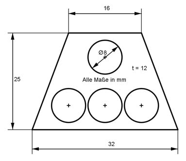

Aufgabe 43 Berechnen Sie die Masse m des Körpers mit einer Dichte ρ von 2,7 kg/dm³.  V = Trapezprisma - 4 * Zylinder d = 8 mm --> r = d/2 = 8 mm/2 = 4 mm a + b V = ------- * hTrapez * t - 4 * п * r² * t 2 32 mm + 16 mm V = ---------------- * 25 mm * 12 mm - 4 * п * 4² mm² * 12 mm 2 V = 7 200 mm³ - 2 411,5 mm³ = 4 788,5 mm³ = 4,79 cm³ ρ = 2,7 kg/m³ = 2,7 g7cm³ m = V * ρ m = 4,79 cm³ * 2,7 g/cm³ = 12,93 g